di micheles, febbraio 2011
Questo articolo su Claymore di Norihiro Yagi si rivolge a chi ha letto almeno il manga o ha visto l'anime. Nonostante non si focalizzi particolarmente sulla trama, ma piuttosto sui significati simbolici dell'opera, contiene qualche spoiler minore. I lettori sono avvisati.
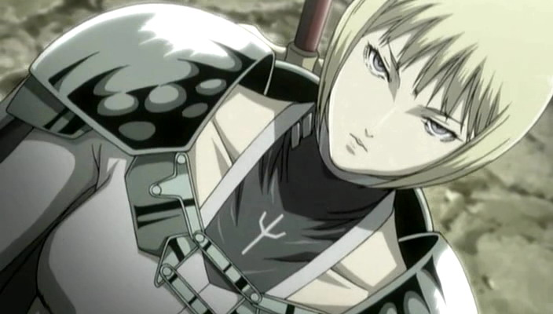
Le protagoniste di Claymore sono delle temibili guerriere dotate di superpoteri che combattono contro dei mostri demoniaci usando delle grosse spade. Fin qui niente di strano, anzi direi nulla di più scontato in tempi in cui le bad girls vanno per la maggiore. Tuttavia, se si guarda con un minimo di attenzione, è evidente come Claymore sia un'opera profondamente originale che si differenzia completamente da un fantasy di seconda categoria. Il primo aspetto di originalità è costituito proprio dalla protagoniste: le Claymore non sono dei tradizionali cavalieri senza macchia e paura, sono piuttosto dei (super)soldati creati in serie ed addestrati da una misteriosa Organizzazione. Per evidenziare questo aspetto l'autore utilizza un intelligente stratagemma, spesso criticato dai lettori meno avveduti: quello di disegnare le Claymore tutte molte simili tra loro, con delle armature identiche, tanto che la maniera più efficace per distinguire una Claymore dall'altra è fare attenzione all'acconciatura dei capelli. Questa soluzione grafica è degna di nota per almeno due motivi. Da un lato sottolinea l'aspetto militare delle Claymore; i soldati devono essere tutti uguali, le loro uniformi servono ad omologarli e a disumanizzarli; dall'altro lato l'attenzione alle acconciature (ognuna molto curata e diversa dalle altre) sottolinea la femminilità e l'umanità delle guerriere.
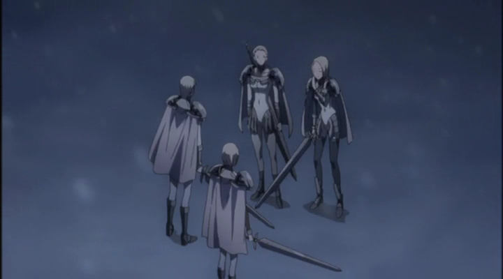
Fisicamente le Claymore sono tutte alte, bionde, con occhi azzurro ghiaccio e con un'espressione fredda e distante. Naturalmente questa scelta non è un casuale ed ha lo scopo di dare un'aura di lontananza e di intoccabilità alle Claymore. Questo è chiaro considerando il pubblico di riferimento: non esistono giapponesi bionde. Del resto Yagi non è il solo ad avere usato questo artificio, basta pensare alle figure materne distanti ed intoccabili di Leiji Matsumoto. L'aspetto fisico delle Claymore però ha anche altri significati. La bellezza fisica, i capelli biondi, la pelle molto bianca, le uniformi di colore chiaro accentuano il loro aspetto angelico in un mondo di demoni. Inoltre l'astuto artificio per cui le Claymore non invecchiano (sono incorruttibili anche dal tempo e possono vivere per centinaia di anni senza cambiare minimamente) permette di raffigurarle sempre come delle giovani vergini. Questo è importante perché il rifiuto del sesso è una delle caratteristiche fondamentali dell'opera. Nel corso della serie ci viene anche fornito una spiegazione per l'aspetto fisico delle guerriere: ci viene detto che il processo di trasformazione in Claymore fa perdere il colore originario dei capelli e degli occhi. Questo è simbolico della perdita dei sentimenti e del carattere originario delle ragazze. Ancor più significativo è il fatto che il processo di trasformazione non sia del tutto perfetto e che in casi rarissimi il colore originale dei capelli possa preservarsi. Quindi, per traslato, è chiaro che l'umanità originaria delle ragazze non è persa del tutto.
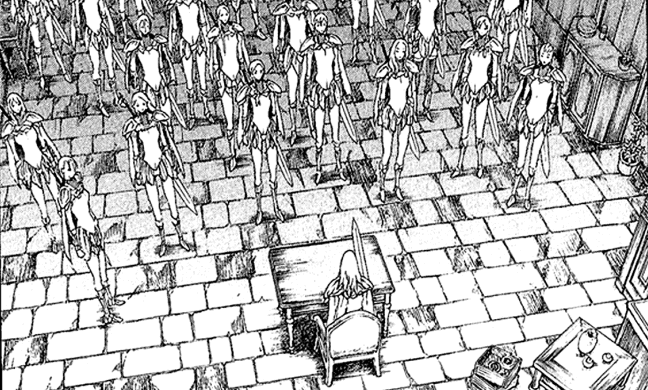
Con una tipica tecnica militare di disumanizzazione, all'interno dell'Organizzazione le Claymore sono primariamente indicate tramite un numero che determina la loro forza rispettiva e la loro posizione gerarchica. Il nome di persona per le Claymore è un'accessorio secondario: per le persone normali le Claymore sono tutte uguali e vengono semplicemente chiamate Streghe dagli Occhi d'Argento, non c'è bisogno di dar loro un nome individuale. Al contrario, tra loro le Claymore preferiscono usare i nomi propri, soprattutto le Claymore che si conoscono bene e sono in rapporti di amicizia. Le Claymore non hanno cognome, ma le più potenti hanno un soprannome: Teresa del Sorriso, Irene della Spada Veloce, Milia del Miraggio, Flora Tagliavento. Questi soprannomi poetici degni degli eroi dei romanzi cavallereschi sono un'altra delle idee brillanti dell'opera: da un lato permettono di umanizzare le protagoniste, rendendole diverse una dall'altra, con uno specifico carattere e talento individuale; dall'altro i soprannomi danno il necessario senso di leggenda e l'opportuna atmosfera epica e romantica alla vicenda. Questi aspetti si sovrappongono e miscelano alla perfezione con l'atmosfera dominante della serie, che è decisamente tragica.
Le claymore sono delle lunghe spade a due lame di origine scozzese (quelle di Highlander per intenderci). Con una felice intuizione Yagi assegna lo stesso nome alle protagoniste della sua opera. Il significato di questa scelta è chiaro: già dal nome si capisce che le Claymore vanno considerate come armi prima che come donne.
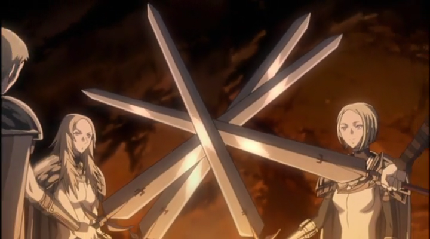
Le spade delle Claymore sono uno dei misteri più grandi: di esse si sa pochissimo, ma è evidente fin dall'inizio che esse sono molto di più di semplici lame. Ogni guerriera è indissolubilmente legata ad una spada (almeno finché la morte non le separa) ed entrambe sono marcate con uno stesso simbolo misteroso. Questo simbolo funge da nome segreto della Claymore (sia la donna che la spada) ed il suo vero significato non è noto. Esso ricorda decisamente una lettera in un linguaggio sconosciuto od un simbolo alchemico: il lettore viene portato naturalmente a credere che il simbolo descriva l'essenza della Claymore che lo porta, che però non viene mai esplicitata. Questo contribuisce ad aggiungere un alone di mistero e di leggenda. L'unificazione tra guerriere e spade è fortissima: per esempio portare con sé la spada di una Claymore morta (come fanno successivamente Ondine e Denev) simbolicamente rappresenta portare sempre con sé nel proprio cuore il ricordo della compagna.
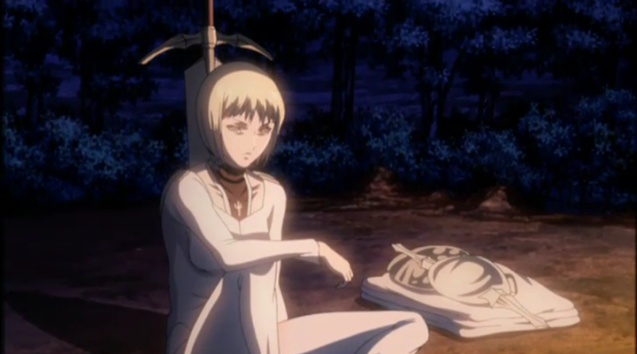
È bene notare come le spade delle Claymore siano sovraccariche di significati. Oltre al significato del ricordo esse hanno anche il significato di amicizia, visto che le guerriere incrociano tra loro le spade in segno di comunità di intenti, come facevano i Tre Moschettieri. Le spade hanno poi il significato di sostegno e di riposo, visto che le Claymore le usano come supporti su cui appoggiarsi quando sono stanche e su cui dormire per le pochissime ore di sonno di cui hanno bisogno. Le spade hanno anche un significato di protezione, sia letterale che simbolico. È impossibile pensare che una Claymore possa dormire senza la sua spada, così come un bambino non può dormire senza il suo orsacchiotto. Non faccio questo accostamente a caso, perché le Claymore sono orfane, reclutate tra ragazze che hanno perso la famiglia a causa degli Yoma; mi pare quindi evidente che la spada funga da sostituto per la madre che hanno perso. Siccome la spada è simbolo prettamente maschile, è naturale pensare che il dormire con la spada abbia anche il significato di dormire con un amante, specialmente visto che un amante in carne ed ossa è negato alle Claymore. Del resto tutta la serie si gioca sull'ambiguità profonda tra amore materno e amore sensuale.
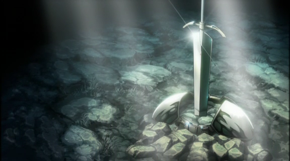
Le spade hanno anche il significato di riposo eterno e vengono usate come stele funebri per marcare le tombe delle Claymore. Non a caso l'impugnatura delle claymore ricorda una croce (l'impugnatura viene detta appunto crociera) e quindi la simbologia funebre è perfetta. Oltre ai molteplici significati simbolici, le spade hanno anche dei segreti legati alla trama della serie. Quello che è certo è che le spade sono composte di un materiale sconosciuto che non esiste nel mondo delle Claymore e che quindi devono essere state fabbricate altrove. Inoltre nel 79esimo capitolo le protagoniste si chiedono come mai dopo migliaia di durissimi combattimenti contro mostri sovrumani le spade non abbiano neppure un minimo graffio e si domandano con inquietudine chi le abbia create e per combattere quale tipo di nemici. La caratteristica dell'infrangibilità più totale delle spade, contrapposta alla fragilità delle guerriere che vengono ferite in continuazione in combattimento e che sono necessariamente destinate a morire, è molto significativa. La spada infrangibile e quindi immortale si identifica naturalmente con l'anima della guerriera.
La ragione d'essere delle Claymore è la morte: esse sono state create come armi allo scopo di eliminare dei mostri abominevoli chiamati Yoma. Mentre la figura femminile è tradizionalmente portatrice di vita, le Claymore sono portatrici di morte. Dunque, per portare a termine la loro missione, le Claymore devono rinunciare alla loro femminilità. Tale rinuncia è completa e irrevocabile: ci viene chiaramente fatto capire che il corpo delle Claymore è stato deturpato in modo da renderle definitivamente inappetibili dal punto di vista sessuale. Questo è evidente dal capitolo 13, in cui Teresa si spoglia nuda davanti a dei banditi che vorrebbero violentarla e dichiara qualcosa tipo "fatemi pure tutto ciò che volete, se il mio corpo non vi disgusta" al che tutti si ritraggono sconvolti e in preda al ribrezzo abbandonano immediatamente il campo. Siccome le Claymore sono bellissime e perfette in tutte le parti del corpo che ci vengono mostrate, se ne deduce che le parti abnormali sono i genitali, che rimangono nascosti. Le Claymore sono quindi simboliche di una femminilità spaventosa, che terrorizza l'uomo (mi torna in mente il mito antichissimo e universale della vagina dentata, reso celebre da Freud). Comunque non è certo questa la malformazione che affligge le Claymore, come si evince dai fatti del capitolo 15. Fortunatamente questi dettagli intimi non ci vengono mai mostrati.
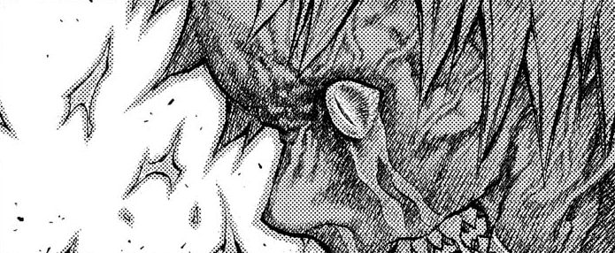
La rinuncia alla femminilità delle Claymore è più profonda di una semplice rinuncia al sesso: insieme a questo esse rinunciano anche all'amore, a qualunque rapporto affettivo profondo e soprattutto rinunciano alla maternità. Anche se non viene detto esplicitamente, sembra piuttosto chiaro che tutte le Claymore siano sterili e che non possano avere figli. La cosa ha durissime conseguenze sul carattere di queste donne. Nelle migliori condizioni le Claymore diventano fredde e spietate; in condizioni meno buone diventano delle sadiche assassine; nel peggior caso possibile impazziscono, tanto che le persone comuni sono terrorizzate da loro e non le reputano migliori degli Yoma che devono combattere. Perché questo è il segreto delle Claymore: per creare una Claymore è necessario prendere una normale ragazzina e iniettare nel suo corpo il sangue e la carne di uno Yoma, dandole così il potere degli Yoma, ma anche i loro istinti. Conformamente agli orchi delle fiabe, l'istinto base degli Yoma è quello di cibarsi di carne umana (altra intuizione brillante che lega Claymore ai terrori dell'infanzia).
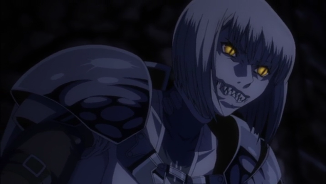
Ci viene insegnato molto presto che il destino di una Claymore è segnato: a lungo andare il lato demoniaco prende sempre il sopravvento e la Claymore deve venire uccisa per evitare che si trasformi in un mostro incontrollabile noto come Essere Risvegliato. Mi viene naturale fare il parallelo con gli anelli del potere di Tolkien, che inevitabilmente corrompono e distruggono i loro possessori (ricordatevi che anche Frodo alla fine viene corrotto dall'Unico Anello). Non c'è scampo: non stiamo parlando qui di una serie edulcorata in cui l'Amore permette di liberarsi dalla maledizione, semmai permette di rimandare il momento della fine e di prolungare la sofferenza delle Claymore. Mi aspetto pienamente che il finale dell'opera sia tragico. C'è da dire comunque che la protagonista è una Claymore particolare, non ottenuta dalla carne e sangue di uno Yoma, e non è impossibile che il suo destino finale sia diverso da quello delle sue compagne. Questo però viene giustamente lasciato in dubbio e non potremo saperlo fino alla fine.
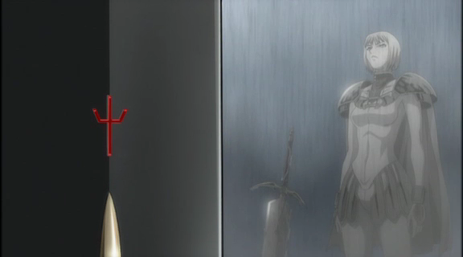
Ciò che rende l'opera appassionante è il fatto che le Claymore in fondo sono molto umane, troppo umane: tanto è vero che a volte prendono decisioni ben diverse da quelle che ci si aspetterebbero da delle fredde macchine omicide. Per esempio, la più forte tra loro, la bellissima e leggendaria Teresa dal Sorriso, decide di tradire l'Organizzazione per fare da madre ad una ragazzina abbandonata e per questo viene condannata a morte. La protagonista di Claymore però non è Teresa, ma Claire, la numero Quarantesette, che seguirà l'esempio di Teresa affezionandosi ad un ragazzo e tradendo anch'essa l'Organizzazione.
L'Organizzazione è uno dei punti di forza dell'opera: costituita da scienziati mostruosi e spietati, intenti a spaventosi esperimenti sugli esseri umani, è un'entità oscura ed inquietante che vi terrà svegli a lambiccarvi il capo per cercare di sviscerare i suoi segreti. Soltanto molto avanti nel corso della serie gli scopi misteriosi dell'Organizzazione cominceranno a chiarirsi e capiremo che sono molto peggiori di quanto avessimo potuto immaginare. Inoltre diventerà chiaro che non c'è uniformità di vedute all'interno dell'Organizzazione e che esiste un mondo più vasto al di fuori dell'isola su cui vivono le Claymore: potrebbe anche essere che dopo 18 volumi la serie sia soltanto all'inizio del suo sviluppo.
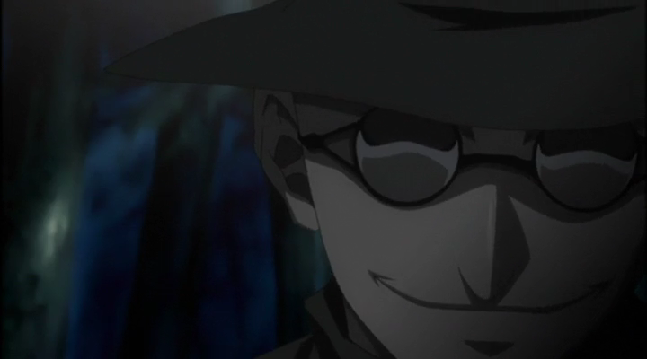
Nel corso della serie scopriremo anche il motivo per cui le Claymore sono tutte donne: in realtà è possibile creare dei guerrieri Claymore di sesso maschile e questo è stato fatto secoli prima, nei primi tempi della fondazione dell'Organizzazione. I guerrieri maschi sono più potenti delle Claymore ma purtroppo più difficili da controllare ed è per questo che l'Organizzazione ha rinunciato (quasi) completamente ai suoi esperimenti sui maschi. Si legge tra le righe che i maschi non sono adatti a diventare Claymore perché la loro spinta sessuale più forte li porta inevitabilmente a trasformarsi in mostri in breve tempo. A questo problema l'Organizzazione risponde scegliendo solo donne che possono sopportare meglio l'astinenza sessuale. Inoltre, da quanto si deduce dal capitolo 13, siamo portati a ritenere che l'Organizzazione applichi alle Claymore una qualche forme di mutilazione genitale molto pesante, tale per renderle ributtanti e bloccare del tutto la loro attitudine al sesso. Sospetto addirittura che le Claymore siano incapaci di provare piacere sessuale nelle modalità normali. Questo però non è abbastanza per scongiurare il pericolo del Risveglio, nome decisamente evocativo per indicare la trasformazione in mostri, che certamente richiama il concetto di risveglio dei sensi.
Normalmente le serie di dark fantasy (Berserk su tutte) sono opere in cui il sesso sfrenato e senza limiti la fa da padrone, con tutte le conseguenze del caso. In contrapposizione totale con questa tradizione Claymore è una serie basata sul completo rifiuto del sesso, con tutte le conseguenze del caso. Il rifiuto del sesso è così totale in Claymore che gli istinti sessuali vengono sempre traslati in qualcosa d'altro. Il fatto che gli Yoma mangino le persone è chiaramente una traslazione della violenza sessuale. La Claymore pazza, la numero Quattro, trasla l'istinto sessuale nel sadismo. Teresa dal Sorriso, la Claymore più potente della storia è quella che più di tutte è riuscita a dominare i suoi istinti sessuali, sublimandoli in amore materno. In Claymore il sesso è una cosa spaventosa, che porta alla perdita del controllo e alla trasformazione in mostri (questo non è detto esplicitamente, ma si capisce chiaramente) e che deve essere evitato a qualsiasi costo. Per questo motivo non vedrete mai del fan service gratuito in questa serie.
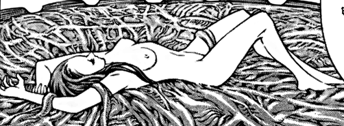
Il sesso come porta verso la bestialità è un tema vecchio come il mondo e nell'universo del manga sta al centro di opere fondamentali quali Devilman e Berserk: ma mentre in queste opere i protagonisti cedono alla tentazione, con i sensi di colpa che ne conseguono (per esempio in Berserk alla fine Gatsu stupra la donna che ama) in Claymore il cedimento è impensabile. Tutto quello che riusciamo a vedere in migliaia e migliaia di pagine è un castissimo bacio tra Claire e Raki nel capitolo 34, al momento della loro separazione definitiva, nulla di più. È questa coerenza assoluta di intenti, questo amore negato fin nelle sue manifestazioni più innocenti che dà a Claymore il valore che ha e la differenzia da qualunque altra serie. Del resto l'amore tra Claire e Raki ha anche valenze edipiche (Raki è molto più giovane di Claire) e quindi doppiamente negato. Anzi, direi triplamente negato perché alle Claymore anche l'amore puramente materno è negato. Questa è probabilmente per la cosa più difficile da sopportare per le Claymore, ancora di più del rifiuto del sesso. L'impossibilità di rapporti parentali ed il rifiuto della maternità è il dramma cruciale per queste donne.
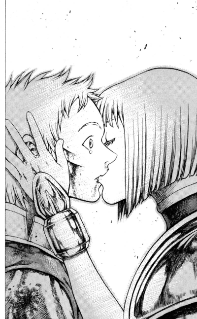
Alle Claymore restano comunque l'amicizia e lo spirito di corpo: esse sono dei militari la cui vita dipende l'una dall'altra e devono essere unite per sopravvivere alle battaglie durissime che le attendono. Uno dei temi principali dell'opera è quindi quello dell'amicizia (l'unico sentimento umano loro concesso) e della fratellanza. Anzi, sarebbe più corretto dire della sorellanza. Volendo, sarebbe anche possibile ipotizzare delle pulsioni sessuali omosessuali sotterranee tra le Claymore. Ci sono vari indizi in questo senso: da un lato l'ambiguissimo e brillantissimo simbolo della statua di Teresa e Claire nelle sue diverse manifestazioni, dall'altro figure come quella mascolina di Ondine fanno sorgere il dubbio. Nell'opera ci sono anche molti esempi di strette amicizie femminili (Sofia e Noel, Denev e Helen). Ciò nonostante non c'è nessun elemento incontrovertibile per suffragare questa ipotesi ed anzi io sarei più propenso a credere che le cose siano come sembrano e che le Claymore siano vergini, come viene fatto intendere nel capitolo 13, in cui Teresa mostra il suo corpo mostruoso e dichiaratamente inadatto all'amore.
Il tema dell'astinenza sessuale è importante anche perché suggerisce una corrispondenza tra le sorellanza delle Claymore e un ordine religioso, cosa sicuramente voluta dall'autore. Del resto le Claymore parlano poco, quasi avessero fatto il voto del silenzio, e mangiano pochissimo, proprio come delle suore avezze al digiuno. In superficie la spiegazione è che le Claymore hanno bisogno di mangiare molto meno di una persona normale a causa del loro metabolismo particolare; tuttavia è evidente che la mancanza di appetito delle Claymore è simbolica della mancanza di appetito sessuale ed in generale dell'incapacità di apprezzare le gioie della vita. È questo che mi fa credere all'ipotesi della frigidità delle Claymore.
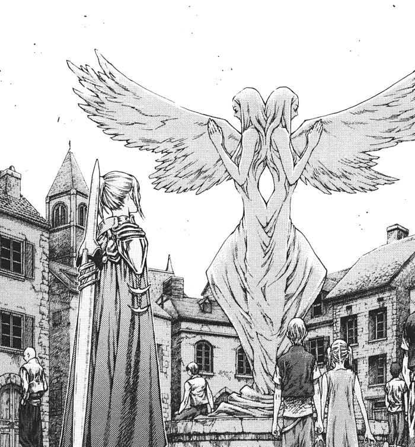
Non sarebbe difficile dare un'interpretazione completamente religiosa alla saga di Claymore, visto che moltissimi simboli vi si prestano, di sicuro volutamente (la verginità, l'importanza di carne e sangue, il simbolo che identifica Claire che ricorda molto una croce e soprattutto la statua angelica di Teresa e Claire). La stessa Organizzazione può essere paragonata ad un'organizzazione para-religiosa (mi ricorda il Magisterium dei libri di Philip Pullman). Sono anche presenti ambientazioni esplicitamente religiose, come la città santa di Rabona e la sua cattedrale. Il legame con la religione è esplicito anche nella storia personale del Numero Tre, Galatea, che abbandona l'Organizzazione per diventare una religiosa. La figura di Teresa del Sorriso, l'unica Claymore il cui corpo non sia mai stato deturpato dalla trasformazione in Yoma è profondamente religiosa, e il suo è il sorriso degli angeli. Se non bastasse, i richiami religiosi sono evidenti non solo dei personaggi associati al Bene, ma anche nei personaggi associati al Male. Priscilla, la più potente dei Risvegliati e l'oggetto della vendetta di Claire è chiaramente raffigurata come il demonio secondo l'iconografia occidentale classica.
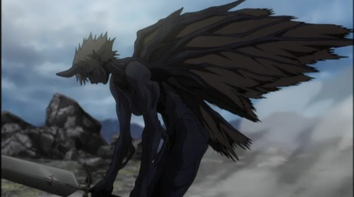
La religione in Claymore è chiaramente ispirata al cristianesimo, fin negli abiti dei religiosi e nei i paramenti dei sacerdoti. La cattedrale è essenzialmente identica ad una cattedrale europea, con tanto di cripta in cui sono conservate le relique del santo. È inevitabile quindi accostare la visione del sesso data dalla chiesa cristiana alla visione del sesso data in Claymore. Mi fermo qui, ma si potrebbe scrivere molto di più su questo tema.
L'interdizione assoluta dal sesso e dall'amore vale per le Claymore ma non per gli Esseri Risvegliati, né per le Creature dell'Abisso, che non sono altro che Claymore potentissime che hanno ceduto al lato demoniaco. Questi esseri mostruosi, che si nutrono di carne umana, sono per certi versi più umani delle Claymore. In particolare, sono sorprendentemente in grado di provare un amore sincero. Per esempio con il proseguo della storia diventa evidente che Riful dell'Ovest ama sinceramente il suo uomo Daf. Luisella del Sud ama profondamente la sorella ed anche Easley del Nord sembra amare di amore paterno Priscilla prima e Raki poi. Il Risveglio quindi libera gli istinti più bassi, ma dona anche la libertà di amare, oltre all'affrancamento dall'Organizzazione. È chiaro quindi come la tentazione a cedere, a Risvegliarsi (il termine di per sé è carico di significato) sia irresistibile.
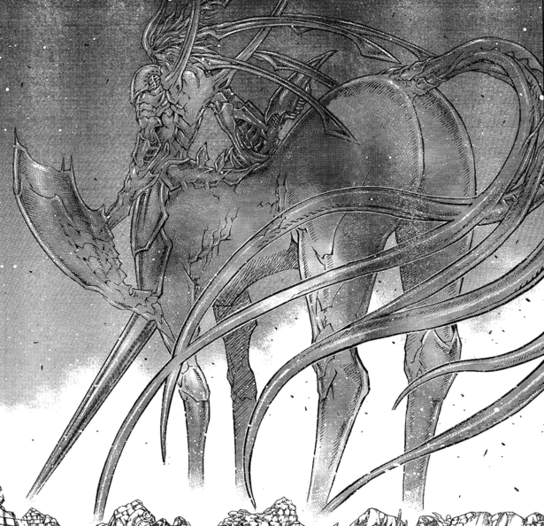
I Tre dell'Abisso sono le creature più vicine al mito in tutta la saga. I loro nomi sono associati ai punti cardinali Ovest, Nord e Sud, mentre l'Est, la direzione del Sol Levante (quella del Giappone), è sospettosamente lasciata all'Organizzazione. Riful, la Strega dell'Ovest (il richiamo al personaggio del mago di Oz rafforza l'alone di magia e di mistero che circonda le Creature dell'Abisso) è immensamente crudele, ma anche una donna innamorata, ed è raffigurata come una giovanissima adolescente. Easley del Nord è raffigurato come uomo fascinoso, valente spadaccino e padre affettuoso. Di Luisella dell'Est sappiamo poco, ma è personaggio essenziale per il suo legame con Raffaella, che le porta a comporre una coppia speculare di altissima significanza simbolica che si contrappone a quella di Teresa e Claire.
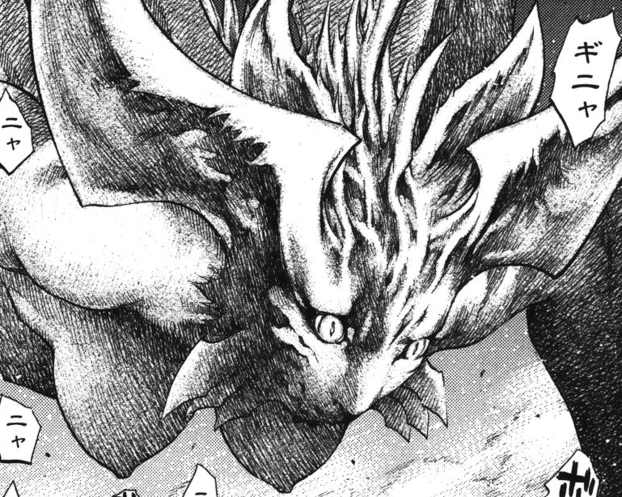
Va notato che i Risvegliati dotati di maggiore potere sono anche dotati di una notevole dose di autocontrollo e possono reprimere i loro istinti, almeno per un periodo limitato. Priscilla, il risvegliato più potente di tutti, può addirittura resistere per anni senza mangiare carne umana, anche se alla lunga l'astinenza la porterebbe inevitabilmente alla morte. I Risvegliati hanno perso la loro umanità definitivamente ma non completamente: tracce di essa persistono ed è per questo che è impossibile odiarli completamente. Questo è particolarmente vero nel caso dei Tre dell'Abisso e di Priscilla. D'altra parte non è neppure possibile amare questi personaggi viste le loro azioni. Claymore è un serie profondamente ambigua, anche e soprattutto a livello morale.
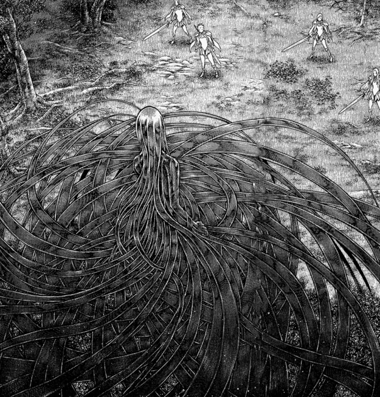
A differenza delle Claymore, i Risvegliati sono esseri altamente individuali e completamente diversi uno dall'altro; inoltre proprio per rafforzare maggiormente il contrasto, le Claymore sono sempre raffigurate vestitissime (è estremamente raro vedere il corpo nudo di una Claymore ed anche in quei pochi casi lo vediamo al massimo di spalle) mentre le Risvegliate sono quasi sempre completamente nude esibendo un corpo ricchissimo di femminilità e di carica erotica, anche e soprattutto quando è mostruoso. Comunque anche la sessualità delle Risvegliate è disturbata. Una menzione particolare in questo senso merita la Risvegliata Agata che appare nel capitolo 75, letteralmente una mangiatrice di uomini.
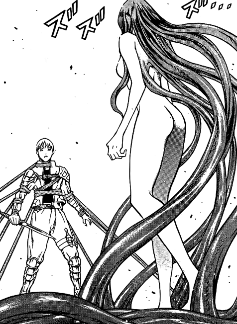
Un discorso a parte va fatto per le sette Claymore ribelli che sono sopravvissute alla battaglia del Nord. Queste non sono più Claymore dell'Organizzazione ed in quanto tali non possono più portare l'uniforme di ordinanza. Inoltre esse hanno appreso tecniche proibite nei loro anni di combattimenti contro i Risvegliati e sono in grado di Risvegliarsi parzialmente. Come conseguenza anche la loro sessualità si è risvegliata molto di più che quella di una Claymore qualunque.
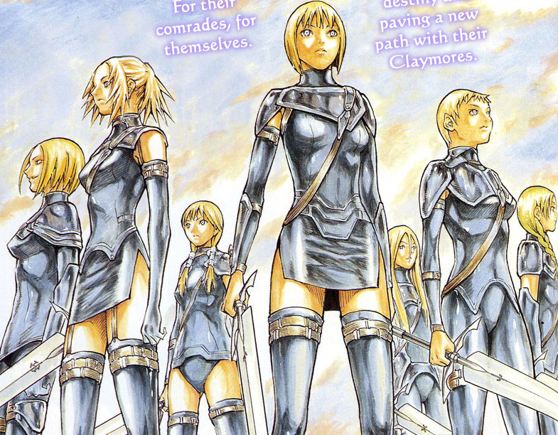
Questo è magistralmente riflesso dal punto di vista grafico. Le ribelli vanno necessariamente disegnate in abiti più discinti e provocanti di quello delle Claymore ordinarie e possono addirittura mostrare gambe e spalle nude, cosa inaudita! Naturalmente però la nudità integrale è proibita ed esclusivo appannaggio delle Risvegliate complete. Le ribelli sono l'espressione di una via di mezzo tra l'obbedienza cieca all'Organizzazione, la strada della repressione totale, e la via delle Risvegliate, la strada della totale sfrenatezza. È una via pericolosa e disturbante, che perturba e tenta le Claymore che sono rimaste fedeli e che ha il potenziale di distruggere per sempre l'Organizzazione. Ma se questo sia il destino delle ribelli oppure se siano destinate alla morte non è dato sapere al momento. Quel che è certo è che molte Claymore hanno deciso di seguire il sentiero delle ribelli, per cui mi aspetto che vedremo sempre più Claymore in abiti discinti, come Galatea nell'immagine qui sotto.
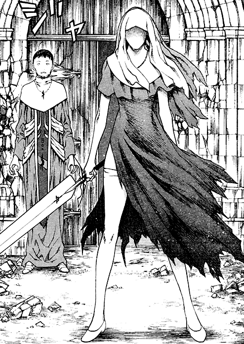
La mutilazione permanente di un eroe è un topos caratteristico della narrativa d'azione e non sorprende che sia presente anche in Claymore. La mutilazione è usualmente simbolica della perdita di qualcosa di fondamentale. Così Capitan Harlock perde un'occhio in concomitanza della perdita del suo amore; così Gatsu perde l'occhio ed il braccio destro nell'Eclissi, quando perde tutto quanto contava per lui. La mutilazione rende impossibile dimenticare ciò che si è perso. Anche quando la mancanza viene riempita in qualche modo, il rimpiazzo (la benda di Harlock, il braccio di legno di Gatsu) è insufficiente e serve soltanto a far risaltare ancora di più la mancanza dell'originale. Le cose sono completamente diverse in Claymore. In primo luogo in Claymore esistono due tipi di mutilazioni: quelle temporanee e quelle permanenti. Quelle temporanee sono frequentissime (in una storia violenta con combattimenti all'arma bianca gli squartamenti e la perdita di arti sono da aspettarsi) ma non sono importanti. Dopotutto le Claymore e ancor più i Risvegliati possiedono poteri rigenerativi impressionanti e far ricrescere un arto non è un grosso problema; perfino Claire che ha poteri rigeneranti molto deboli può comunque riattaccarsi un arto perduto. Le mutilazioni permanenti sono un altro discorso. Esse sono importanti, ma non per i motivi tradizionali. Claire perde un braccio ma soltanto per ottenerne un altro molto migliore di prima. Il braccio perduto di Claire non ha nessun significato: quello che ha significato è il nuovo braccio, che le viene donato e simboleggia l'amicizia e la comunione d'intenti delle Claymore, che sono disposte a sacrificare tutto l'una per l'altra. Claire deve portare a termine una missione di vendetta, ma non lo fa tanto per odio, quanto per l'amore che porta a Teresa.
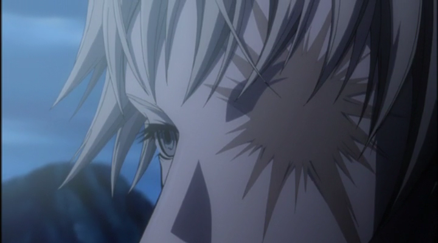
Una caratteristica notevole delle mutilazioni permanenti in Claymore è che non riescono ad intaccare la bellezza delle guerriere. Raffaella ha perso un'occhio (cosa rarissima tra le Claymore) ma la cicatrice a forma di stella la rende ancora più bella; Galatea ne ha persi due ma non perde nulla del suo fascino. L'unica mutilazione che impressiona veramente è quella finale di Ilena, ed impressiona così tanto perché inferta per amore in una scena ad altissimo coinvolgimento emotivo.
Non posso concludere questo paragrafo senza accennare nuovamente alla mutilazione permanente più importante di tutte, quella che tutte le Claymore condividono e che le rende mostruose, simbolo del nucleo profondo della loro esistenza. Tale mutilazione profonda è completamente nascosta e non ci viene mai mostrata. Noi non vedremo mai il corpo di una Claymore. Questo forte senso del pudore e è una caratteristica peculiare di Claymore, che è fondamentalmente una serie del non visto.
Claymore si caratterizza per un'attenzione particolare alla misura, non solo in senso morale ma anche in senso letterale. La prima cosa che è essenziale misurare è la forza rispettiva di ogni Claymore, che viene codificata nel numero gerarchico della guerriera e diventa il parametro principale per indicarla, almeno secondo i criteri dell'Organizzazione. Questo perché l'Organizzazione è un'organizzazione scientifica che sperimenta sulle Claymore allo scopo di creare dei guerrieri perfetti. È per questo che la loro forza deve essere accuratamente misurata e conosciuta. È per questo che sappiamo perfettamente quali sono le percentuali di energia demoniaca a cui le Claymore possono accedere in modo sicuro; e sappiamo anche del limite di non ritorno, che si raggiunge quando una Claymore tenta di attingere a più dell'80% della sua energia Yoki. Tutto questo è stato stabilito dall'Organizzazione tramite secoli di sperimentazione. Sappiamo addirittura che le Claymore che conosciamo fanno parte della 77esima, 78esima e 79generazione: di nuovo, numeri precisi che danno l'impressione del controllo. Ma si badi bene, soltanto l'impressione perché Claymore è una serie che si gioca tutta sul limite e sullo sfondamento del limite.
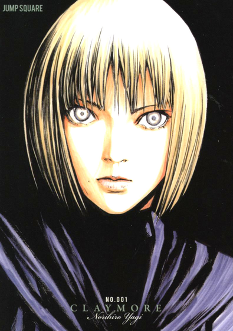
La misura infatti non è mai precisa: anche il numero d'ordine di una Claymore non è statico, ma cambia a mano a mano che la Claymore progredisce nella gerarchia. La forza finale di una Claymore non è conosciuta a priori. Questo è particolarmente vero per le Claymore ribelli della seconda parte dell'opera, che avendo abbandonato l'Organizzazione sono senza numero e quindi fuori controllo. La loro forza reale è sconosciuta ma sicuramente molto più grande rispetto a quella nominale data dai loro numeri di partenza. Questo è evidentissimo nel caso di Claire, che è la Claymore con il numero più basso possibile e che pure si deve confrontare con Priscilla, che è la Risvegliata più potente che esista. Per fare questo deve superare i propri limiti. Vedremo nel corso della serie che il concetto di limite non è così netto e preciso come l'Organizzazione vorrebbe fare credere; ci sono dei margini di manovra attorno ad esso, per quanto ristrettissimi e pericolosissimi. Ma anche se il limite è lasco e fondamentalmente ambiguo è sempre presente e nel suo profondo invalicabile: Claire e le altre ci arrivano molto vicino ma non lo oltrepassano veramente. Il vero limite non è quello di usare il pieno potere di un Risvegliato: Claire e le ribelli possono farlo eppure sono in grado di tornare indietro. Il vero limite è molto più profondo e tocca corde primordiali: sto parlando del tabù atavico dell'antropofagia. Il simbolo dell'aver oltrepassato il limite è infatti chiaro e cruento: l'appetito di carne umana. Chi l'ha assaggiata come i Tre dell'Abisso o Priscilla non ha nessuna possibilità di tornare indietro. È questo il vero limite che separa l'uomo dalla bestia secondo l'etica di Claymore.
Claymore è un'opera ad alto contenuto non solo simbolico, ma anche numerologico. Il numero più ricorrente in Claymore è il quarantasette, il numero identificativo della protagonista. Nel corso della serie scopriamo che 47 è il numero complessivo di tutte le guerriere, corrispondente al numero dei territori in cui è divisa l'isola che costituisce l'universo delle Claymore. Quando una guerriera muore, l'Organizzazione la sostituisce con una nuova leva ma il numero complessivo non cambia. Evidentemente l'Organizzazione ha risorse limitate ed è anche possibile che il numero di spade sia limitato a 47. Se questo fosse vero, si renderebbero possibili vari interpretazioni interessanti. Se vi sono solo 47 spade i simboli possibili sono solo 47 e l'alfabeto che descrive il mondo delle Claymore sarebbe limitato. Nelle lingue antiche è consuetudine usare le lettere per indicare anche i numeri e quindi il simbolo assegnato ad una Claymore potrebbe indicare il suo numero segreto e il suo vero potenziale. Anche se è l'Organizzazione a consegnare le spade queste sono prese dal di fuori e non è detto che la stessa Organizzazione sappia come crearle o che conosca il segreto dei simboli incisi su di esse. Se fosse così allora le spade andrebbero riciclate alla morte delle Claymore. Non ci sono indizi chiari in tale senso, ma pare strano che le spade siano abbandonate dopo la morte delle Claymore. Nel capitolo 65 un gruppo di Claymore viene mandato al Nord a contare le spade sulle tombe delle guerriere uccise: mi pare strano che si limitino a contare. Nulla vieta di pensare che la loro vera missione sia quella di recuperare le spade per poi riassegnarle alle nuove leve. Se fosse così Claymore di diverse generazioni a cui è stata assegnata la stessa spada e lo stesso simbolo condividerebbero la stessa anima e le spade fungerebbero da ponte tra il passato ed il presente dell'ordine. Tutto ciò però al momento è pura speculazione.
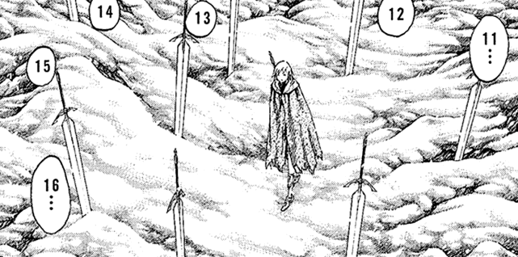
Il 47 è certamente il numero più misterioso in Claymore, ma non è l'unico numero importante. Per esempio ci sono i Tre dell'Abisso, creature demoniache ma allo stesso tempo divine, che quindi sono associate al numero divino per eccellenza. Ci sono le Sette guerriere che sopravvivono alla guerra del Nord e come sappiamo il Sette è il numero magico per eccellenza, con innumerevoli significati esoterici, cabalistici e religiosi (sette è il numero dei bracci della Menorah ebraica e il numero dei peccati mortali delle religione cattolica); è anche un numero con fortissime associazioni nella narrativa d'azione: i Sette Samurai di Kurosawa, le Sette stelle di Hokuto, i Sette Eroi di Ubel Blatt. Non è un caso che le sette guerriere riappaiano dopo sette anni e che la prima persona a diventare cosciente della loro esistenza sia la nuova numero Quarantasette, che vediamo intenta a contare e ricontare ossessivamente il numero delle spade sulle tombe delle 24 Claymore mandate nella guerra del Nord, trovandone 17 presenti (17 = 10 + 7) e 7 mancanti all'appello. 77, il numero della generazione di Teresa, contiene due volte il 7. Anche il 47 contiene il 7, più un 40 che ha associazioni religiose molto forti: i 40 anni di vagabondaggio del popolo ebraico nel deserto, i 40 giorni di tentazione di Gesù Cristo. Sono andato a controllare su Wikipedia se il 47 avesse un particolare significato nella tradizione giapponese: ho trovato invece che il 47 è l'unico numero ad avere un fan club, la 47 society che ha molti aderenti tra i fan di Star Trek. Non so se l'autore di Claymore fosse cosciente di questi significati o meno (per esempio dubito che sapesse che nella smorfia napoletana il 47 è associato al Morto, coincidenza parecchio inquietante), fatto sta che il 47 in sé è un numero misterioso. In particolare è un numero primo, indivisibile e quindi simbolo dell'inflessibilità e incorruttibilità di Claire.
Il simbolo visivamente più potente in tutta l'opera è quello della statua di Teresa e Claire, che dà al lettore una fortissima impressione fin dalla prima tavola in cui appare, graficamente curata in modo impressionante. Si tratta evidentemente di un immagine densa di significati. Teresa e Claire sono le dee gemelle dell'amore puro e sono raffigurate come angeli con le mani giunte in posizione di preghiera. Il significato religioso è immediato e fortissimo. Le due dee si danno le spalle e non si guardano: sembrano simboleggiare molto di più l'amore negato piuttosto che l'amore puro. D'altra parte forse l'amore puro va interpretato proprio nel senso di amore non reciproco, ma amore verso Dio e gli Altri. Nel capitolo 14 e nel capitolo 41 ci viene detto esplicitamente che i nomi Teresa e Claire sono associati all'amore dei genitori verso i figli e l'amore parentale sta al centro di Claymore. Sicuramente ci sono anche altre interpretazioni possibili della statua.
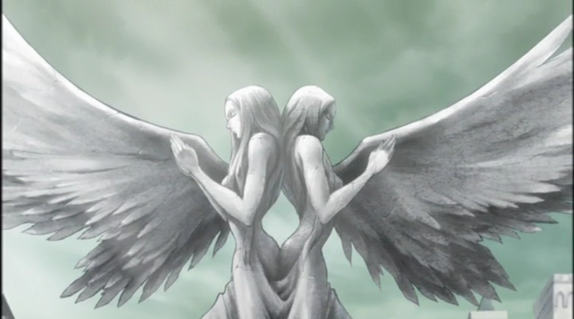
Quel che è certo è che la statua ha un significato essenziale e centrale per tutta l'opera. Questo è chiaro perché il tema delle coppie speculari appare più e più volte. Anzi, direi che ci viene riproposto ossessivamente in tutta una gamma di significati diversi, via via più ambigui e sessualmente carichi. Le sorelle Raffaella e Luisella sono incontestabilmente un'immagine speculare ed opposta di Teresa e Claire. Seguendo il gioco degli opposti, qui le due sorelle si abbracciano invece di guardare da parti opposte ed il loro amore non sembra affatto puro. D'altra parte la loro espressione dolcissima nega il contesto in cui l'immagine è presa, rendendola di difficilissima interpretazione. Quello che sappiamo è che questo stadio dell'evoluzione di Raffaella e Luisella è temporaneo e che la loro evoluzione finale ricorderà molto di più la statua di Teresa e Claire, seppure in chiave demoniaca.
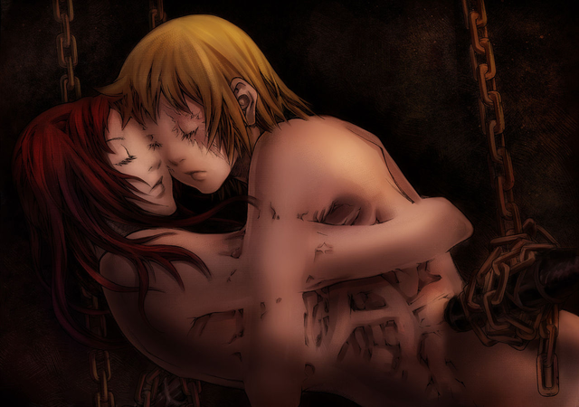
Vi lascio riflettere da soli sulle implicazioni di questa progressione di immagini cariche di ambiguità. Vi faccio inoltre notare che questa potrebbe essere un'immagine profetica per il destino finale di Teresa e Claire (non le dee, ma le nostre protagoniste). E con questo penso di avervi inquietato abbastanza.
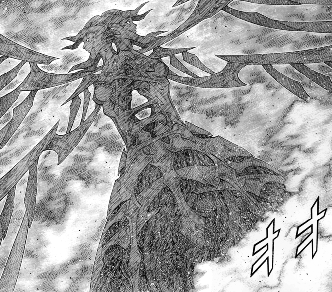
Se non bastasse il tema delle gemelle identiche viene riproposto per una terza volta nella figura delle guerriere più potenti dell'Organizzazione, Alice e Beth. È assolutamente chiaro che c'è qualcosa di essenziale sotto la simbologia dell'immagine speculare e sotto questa tremenda simmetria, ma probabilmente non riusciremo a scoprirlo prima della fine della serie. A queste coppie perfettamente simmetriche si sovrappongono altre coppie molto significative, in cui la simmetria è simbolica più che letterale. Per esempio ogni guerriera costituisce una coppia con la propria spada, quasi come se fosse sposata ad essa. In Claymore il rapporto d'amore sensuale è sempre inevitabilmente associato anche al rapporto d'amore parentale (Claymore è una serie supremamente edipica). Questo è chiarissimo nel rapporto tra Claire e Raki, ma anche nel rapporto Easley-Priscilla e in maniera ancora più ambigua nel rapporto tra la nuova numero Quarantasette (immagine speculare di Claire, la Claymore imperfetta e più debole di tutte) e la nuova numero Quattro (immagine di Ofelia, la Claymore pazza precedente numero Quattro). Sono comunissimi anche i rapporti binari di stretta amicizia, che posso avere sfumature più o meno ambigue. Abbiamo i due soldati di Rabona, Gark e Sid; abbiamo le due Claymore della generazione di Claire, Denev e Helen, che sono l'immagine speculare della coppia Sofia e Noel nella generazione di Teresa. Per non parlare delle coppie spezzate, in cui uno dei membri è morto, come Miria e il precedente numero 6, oppure Ondine e la sua amica (amata?) caduta per salvarla.
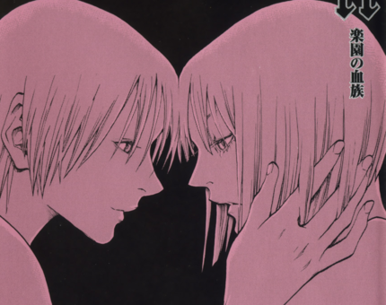
La caratteristica principale dei disegni di Claymore è quella di essere perfettamente adeguati ai bisogni della trama e assolutamente consistenti con le atmosfere della serie. Così come la serie diventa progressivamente più coinvolgente, così i disegni migliorano continuamente. Quello che è importante però non è tanto il miglioramento della qualità dei disegni, quanto il fatto che essi comincino ad assumere un'aurea di grandiosità che manca all'inizio, senza dubbio volutamente. Le Claymore cominciano come donne poco più che ordinarie, ma proseguendo nell'opera assumono una valenza simbolica sempre più forte, diventanto figure dapprima leggendarie e poi in qualche caso (Teresa) addirittura ultraterrene. Tutto ciò avviene gradualmente, in un crescendo che si può capire solo a posteriori. Per esempio, vale la pena notare che Yagi fa un uso molto parsimonioso delle illustrazioni a pagina intera o a doppia pagina e questo è soprattutto vero nella prima parte dell'opera. Si pensi che perfino un simbolo centrale come la statua angelica di Terese e Claire che appare nel capitolo 41 è raffigurato in una vignetta non a tutta pagina. Questo rende possibile il crescendo quando il tema viene riproposto nel seguito, ogni volta in maniera diversa e in dimensioni maggiori.
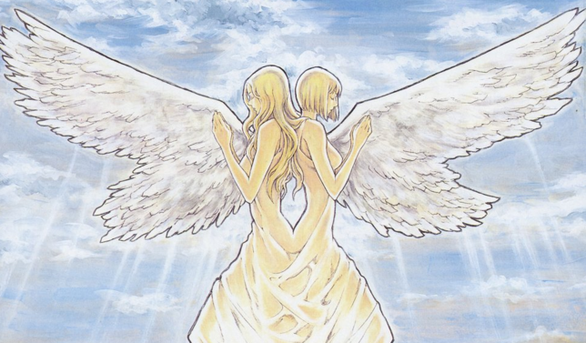
Si consideri per esempio la copertina del numero 72. In questa raffigurazione a tutta pagina e a colori le facce della statua sono state rimpiazzate dalle facce di Teresa e Claire. Successivamente Yagi arriva ad usare la doppia pagina, quando il tema viene riproposto tramite le immagini di Raffaella e Luisella nei capitoli 82 e 93, arrivando al climax. La potenza immaginifica e visionaria e la significanza simbolica di queste coppie speculari è impressionante, proprio grazie all'artificio della progressione. Forse non siamo alla pari di un Go Nagai o di un Kentaro Miura, che sono modelli inarrivabili per quanto riguarda il puro impatto visivo simbolico ed evocativo, ma non ci sono molte altre opere che arrivino a livelli paragonabili a quelli di Claymore. La limitazione nell'uso di immagini a tutta pagina e pagine doppie è anche significativa del senso del pudore delle Claymore. Claymore è una serie altamente spettacolare, ma questo risultato viene ottenuto limitando la spettacolarità a buon mercato costituita dagli eccessi visivi. Le vignette sono per lo più di dimensione normali, rettangolari, tradizionali, limitanti. I personaggi non escono mai dallo spazio loro riservato e l'ordine e la precisione regnano sovrani anche a livello grafico.
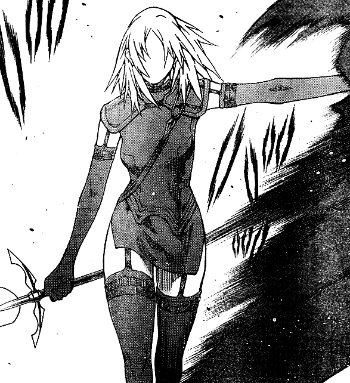
I disegni a seconda delle situazioni possono essere particolarmente
dettagliati e accurati (tipicamente nelle raffigurazioni dei
Risvegliati e nelle immagini ad alta pregnanza simbolica) oppure anche
molto schematici. Non è infrequente trovare casi in cui i volti dei
personaggi sono semplicemente abbozzati, o anche mancanti del tutto:
questo è chiaramente fatto ad arte, perché a volte un volto mancante può
rendere l'emozione richiesta dalla storia più che una qualunque
espressione. Yagi è un maestro nel disegnare le figure femminili,
soprattutto in dettagli come l'acconciatura dei capelli e la forma
delle labbra, che assumono particolare importanza visto che
costituiscono il modo principale per distinguere le Claymore tra loro. È anche
capacissimo di disegnare le figure maschili, ma volutamente dedica
loro meno tempo e attenzione che alle figure femminili. Gli unici
personaggi maschili importanti sono Easley del Nord, che però viene
disegnato con tratti femminei (cosa non casuale, visto che condivide
la stessa origine delle Claymore) e Raki, sia nella sua versione
infantile che in quella adulta, che è decisamente più virile.
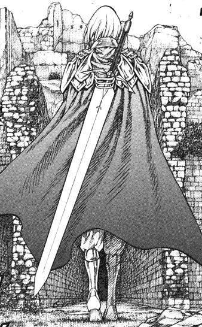
Un'altra caratteristica notevole di Claymore è il frequente ricorso ad inquadrature in cui il/la protagonista viene visto di spalle, cosa che non ho mai visto in altre serie. Questo capita più volte, sia per i Risvegliati che per le Claymore, e non dubito che abbia un significato simbolico. Sembra proprio che l'autore preferisca focalizzare la sua attenzione sul lato nascosto delle cose. Per non parlare del fatto che l'inquadratura di spalle permette al lettore di vedere il mondo dallo stesso angolo in cui lo vedono le Claymore. Concludo notando la cura per i fondali che descrivono il background del mondo delle Claymore. Spesso sullo sfondo vediamo riprodotte vecchie città medievali e rovine, a sottolineare l'antichità e la complessità del mondo delle Claymore, della cui storia sappiamo molto poco.
Claymore viene spesso paragonato a Berserk. Ciò è del tutto comprensibile essendo Berserk l'opera di riferimento quando si parla di heroic fantasy nipponica. Molti si sono sforzati di rilevare le somiglianze tra le due opere, che indubbiamente esistono. A mio avviso però ha molto più senso dare una critica di Claymore come opera anti-Berserk, perché le differenze sono più significative delle somiglianze. In particolare, le due opere sono caratterizzate da una simbologia completamente diversa.
Lasciatemi considerare in primo luogo la spada, che costituisce il fulcro simbolico di entrambe le serie. Della spada in Claymore ho già parlato, descrivendone diversi significati, anche se sono ancora ben lontano dall'averli esauriti tutti. In Berserk la spada è un oggetto ugualmente sovraccarico di significati (se non di più) ma tali significati sono completamenti diversi. Per esempio le spade delle Claymore hanno la caratteristica dell'infrangibilità più totale. È inevitabile pensare all'indistruttibilità delle spade come simbolo dell'inviolabilità della castità delle Claymore. D'altra parte il gigantesco spadone di Gatsu è tutt'altro che indistruttibile, tanto è vero che a causa delle infinite battaglie rischia di spezzarsi ed ha bisogno di essere riparato. Tutto ciò è ovviamente simbolico dello spirito di Gatsu, che è scheggiato dentro ed ha bisogno di essere riparato. In Berserk la spada ha anche un fortissimo significato fallico, la spada che taglia, perfora e violenta. In Claymore questo significato è del tutto assente e semmai la spada è simbolo di separazione e di rinuncia all'amore: mi viene in mente la famosissima scena in cui Tristano e Isotta dormono separati da una spada, che viene usata come guardiana della loro castità.
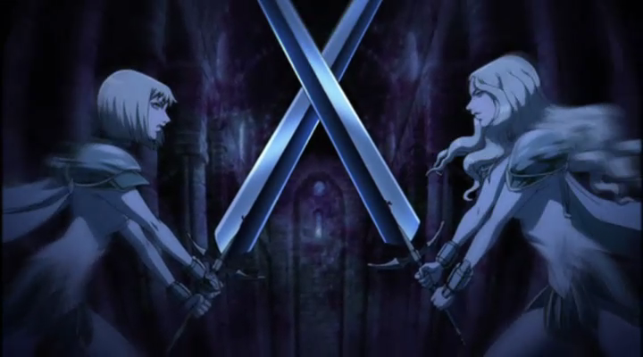
Berserk e Claymore sono opere diversissime anche dal punto di vista delle concezioni filosofiche soggiacenti. Il mondo di Berserk è dominato dal caos, mentre il mondo di Claymore è dominato dall'ordine (sia pure un ordine spietato con connatazioni tutt'altro che positive). Berserk ci presenta una visione lovecraftiana dell'universo, dominato da mostruose, immortali essenze non-umane che governano il destino dell'uomo e dotate di potere illimitato; in Claymore invece anche le figure che più si avvicinano al divino, i Tre dell'Abisso, sono in realtà creature artificiali create dalle scienza dell'uomo, con poteri limitati, che possono essere uccisi e che vengono uccisi. In realtà Claymore è una serie più vicina alla fantascienza che al fantasy. Del fantasy prende solo l'iconografia caratteristica (l'ambientazione medievale, l'attenzione alla natura, le raffigurazione di elfi e demoni) ma il pensiero che sta dietro l'opera è del tutto moderno. La magia non esiste ed il suo posto è preso dalla scienza perversa dell'Organizzazione che gioca con la vita e con la morte. Al contrario Berserk è opera profondamente magica ed espressione di un pensiero primitivo. Questo lo dico in in senso non dispregiativo, ma nel senso di pensiero primordiale. Ma mentre Claymore si gioca tutto sul rifiuto del primordiale (Claire non oltrepasserà mai il vero limite) in Berserk il limite è già stato già oltrepassato, fin dal primo numero: metaforicamente, Gatsu si è già cibato di carne umana.
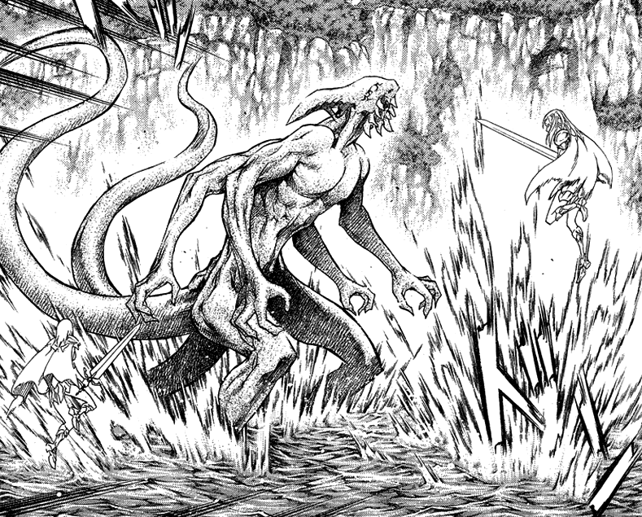
Il tema fondamentale di entrambe le opere è la lotta tra ragione ed istinto. Ma mentre Berserk è la serie del trionfo dell'istinto sulla ragione, Claymore è la serie del trionfo della ragione sull'istinto. Entrambe le opere condividono però una visione tragica dell'esistenza, per cui il risultato finale della battaglia tra ragione e istinto è tragico, chiunque vinca. Nel caso di Berserk l'istinto vince, ma il prezzo da pagare è il senso di colpa per Gatsu, la macchia che oscura la sua anima. Nel caso di Claymore la ragione vince, ma il prezzo da pagare è la rinuncia alla femminilità e all'amore. Se Berserk è una serie della vita, brulicante, caotica e completamente fuori controllo, Claymore è una serie della morte e non a caso al punto in cui siamo arrivati si parla di resuscitare i cadaveri delle Claymore defunte. Se il Nero è il colore di Berserk, il Bianco è il colore delle Claymore. Se Berserk è maschile, Claymore è femminile. Se Berserk è il Caos, Claymore è l'Ordine. Riportando a galla vecchi ricordi del liceo e usando la terminologia nietzscheana. direi che se Berserk è un'opera che segue lo spirito del dionisiaco, allora Claymore è un'opera che segue lo spirito dell'apollineo. Se Berserk è dominato dall'immagine demoniaca delle Mano di Dio che tiene il mondo in pugno, simbolo del caos che governa la vita ma anche dell'affermazione di sé stessi sopra tutti gli altri, Claymore è dominato l'immagine angelica della statua di Teresa e Claire, simbolo dell'immobilità della morte e della negazione di sé.
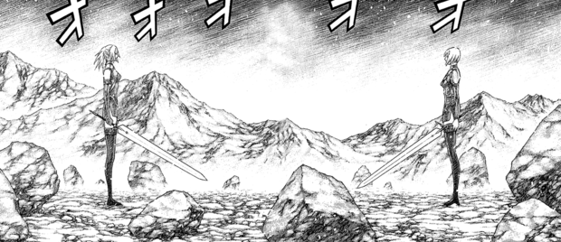
Un altro dei temi portanti di Berserk è quello dello stupro e delle conseguenze di questo, non esclusa la vita (non è causale il tema del figlio di Gatsu e Caska, morto eppure vivo). Dall'altra parte, le Claymore sono donne che non possono essere stuprate, perché hanno già subito qualcosa di molto peggio. Sotto questo punto di vista Claymore è una serie perfino più triste di Berserk: non esistono personaggi umoristici o dolci a fare da contraltare alla cupezza della trama. Gatsu ha Pak, Isidoro e Shilke, Claire non ha nessuno se non Raki, che per tutta la seconda parte dell'opera spicca per la sua assenza; Gatsu può essere condannato, ma i suoi compagni non lo sono certamente; le compagne di Claire invece sono condannate ad un destino non meno tragico del suo. Claymore è una serie invernale, avvolta in una tristezza immutabile, mentre Berserk è una serie estiva, torrida e dinamica, in cui alla maggiore felicità nei punti più alti corrisponde una maggiore infelicità nei punti più bassi. Di nuovo, Claymore è un'opera della misura, mentre Berserk è un'opera smisurata.
Claymore è una serie popolare in entrambi i sensi della parola: è piuttosta conosciuta (mi sono deciso a vedere l'anime perché vedevo questo nome sempre ai primi posti nelle classifiche di popolarità in vari siti di lingua inglese) ed è una serie per il grande pubblico, non certo una serie intellettuale. In effetti la trama di Claymore si può riassumere in poche parole come "una guerriera con uno spadone ammazza un sacco di mostri perseguendo una missione di vendetta". Niente di particolarmente originale o di difficile comprensione. Chiunque può seguire facilmente la storia, che consiste in massima parte in combattimenti e squartamenti, non certo in elucubrazioni filosofiche. Questo costituisce uno dei maggiori punti di forza per questa serie, il presentarsi sotto un aspetto del tutto tradizionale, con una serie di stilemi mutuati dall'epica classica e medievale, seppure rivisitati in chiave moderna.
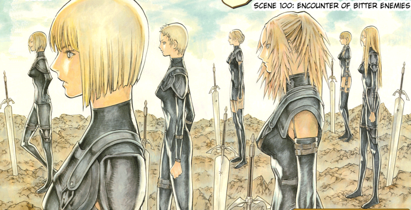
Sotto la superficie un lettore attento può certamente trovare un'infinità di significati profondi, ma nessuna analisi intellettuale è necessaria per fruire questa serie. Ciò la differenzia completamente da altre opere ad elevato simbolico, come Evangelion, tanto per citare un esempio famoso. È impossibile riassumere Evangelion (includendo il finale) in una frase di poche parole. Anzi, non è possibile neppure con una frase di molte parole: Evangelion è un'opera che volutamente non offre nessun livello base di comprensione, che richiede un'interpretazione: non solo, l'opera è strutturata in maniera tale che nessuna delle sue interpretazioni sia coinvincente, per la felicità dei critici e degli intellettuali. In contrasto in Claymore c'è un'interpretazione privilegiata, quella letterale, storia di amore, amicizia, violenza, vendetta ed epiche battaglie. Personalmente io ho visto tutte e 26 le puntate dell'anime in pochissimi giorni, perché non riuscivo a smettere di guardarlo. Non sono certo stato a pensare ai significati profondi, sono stato completamente trasportato dall'azione. L'anime in sé è un prodotto quasi perfetto, di livello elevatissimo, sia come animazioni che come disegni, colori e musiche, per non parlare dell'eccellente character design, dei mostri e dei combattimenti all'arma bianca, tra i migliori che abbia mai visto. L'unico punto dolente è il finale. Fino alla ventiquattresima puntata l'anime è fedelissimo al manga ed è perfetto. Le ultime due puntate invece si risolvono in una battaglia finale che fin da subito mi è sembrata affrettata e non in sintonia con il resto dell'opera. Insoddisfatto dal finale dell'anime sono andato a recuperare il manga ed è venuto fuori che era stato inventato di sana pianta. Non perdono alla produzione l'aver inventato un finale farlocco: sarebbe stato molto meglio chiudere la serie con la battaglia finale contro il Re Leone Riccardo, che è la conclusione naturale della prima parte del manga. La seconda parte poteva essere l'occasione per una seconda serie animata nel futuro, che adesso mi pare invece di difficile realizzazione.
Claymore ha una trama complessa, che si sviluppa in un lungo flashback sulla storia di Teresa, presegue fino ad una battaglia epocale nel Nord, continuando poi su di un registro diverso, in cui Claire e le sue compagne si ribellano apertamente all'Organizzazione. Molti misteri e segreti vengono svelati poco a poco e decine di personaggi diversi appaiono in corso d'opera. Il livello di azione è costante in tutte le tremila e passa pagine che sono state pubblicate finora. L'attenzione è sempre viva e non c'è mai un momento di pace per le nostre guerriere. Se posso trovare un difetto nel manga, infatti, questo è quello di avere un ritmo troppo incalzante, con combattimenti ininterrotti: qualche pausa riflessiva quà e là non avrebbe fatto male. Sarebbe stato interessante approfondire maggiormente gli avversari, come Riccardo e le Creature dell'Abisso, sulle cui vite precedenti ci vengono dati frammenti di informazione, lasciando intendere molto di non detto. Ma anche questo fa parte del fascino dell'opera, il non detto, che è onnipresente. Del resto l'azione domina e non c'è spazio per l'introspezione dei nemici quando anche quella dei protagonisti è ridotta al minimo e lasciata soprattutto all'interpretazione del lettore. Del resto più che le parole in Claymore contano i fatti e le immagini. Non c'è bisogne di molte parole per capire il rapporto tra Claire e Teresa, bastano poche scene a farci capire tutto.
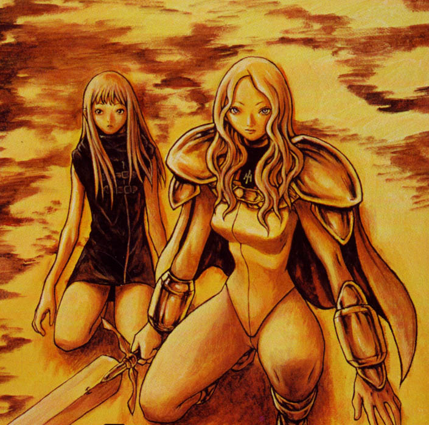
Questa serie finora è stata un capolavoro di coerenza, senza mai una sbavatura, né un'ammorbidimento dei toni. I toni semmai si sono fatti più duri. Questo è inevitabile in tutte le serie di combattimenti, in cui i personaggi affrontano avversari via via più forti. Spero che non si esageri in questa escalation perché si rischia di perdere il senso della misura e l'aspetto umano dell'inizio dell'opera. La linea da seguire è difficile da seguire: le Claymore non possono permettersi di perdere completamente la loro umanità, ma neppure di diventare troppo umane. Al punto in cui siamo arrivati è impossibile sapere quello che succederà e quanto manchi alla fine: ci sono molte sottotrame aperte, ma in seguito all'esperienza pregressa mi aspetto dei colpi di scena che cambino le carte in tavola. In particolare sono molto in dubbio su quale sarà l'evoluzione del personaggio di Priscilla, che al momento presenta non pochi lati ambigui. Spero che non si attui alcuno stravolgimento; in ogni caso, dubito fortemente che si arriverà ad un comodo happy ending anche se sperabilmente l'Organizzazione verrà sconfitta. Comunque sia, a mio avviso Claymore è già entrato a buon diritto tra i capolavori del genere heroic fantasy per le emozioni che è in grado di suscitare.
Ci sono vari siti in rete che contengono informazioni sulla saga delle Claymore. Io ho consultato la voce italiana di Wikipedia http://it.wikipedia.org/wiki/Claymore_(manga) ed il sito del fanclub italiano http://www.claymorefan.org che contengono link a tutto quello che c'è da sapere sull'universo delle Claymore.
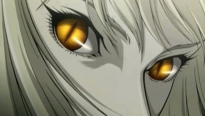
Le immagini e gli screenshots su queste pagine sono di proprietà dei relativi autori. Il testo è mia creazione originale e può essere liberamente citato e rielaborato in qualunque forma e per qualunque scopo, purché non a fini di lucro.